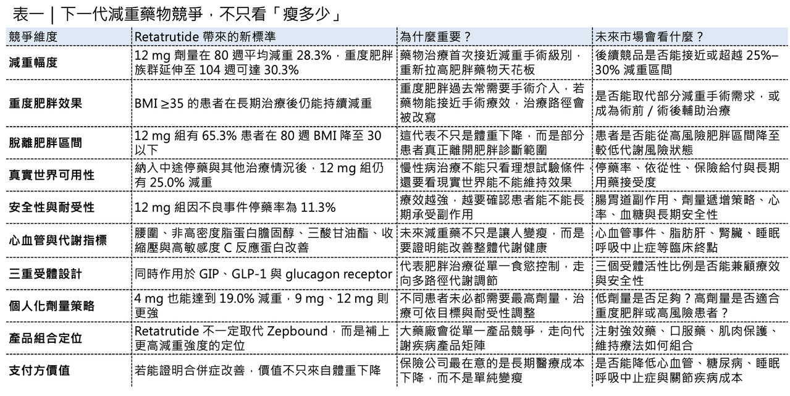
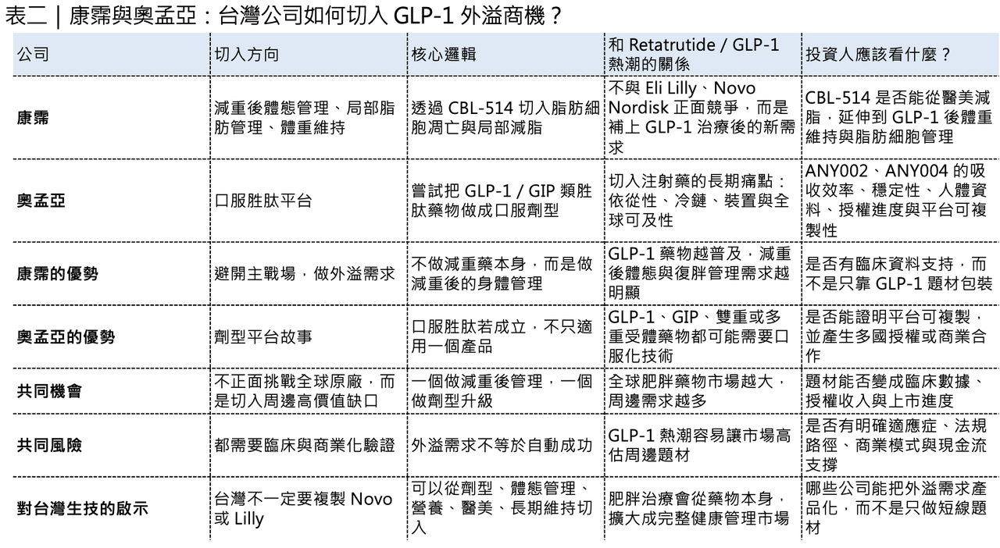

肥胖治療正在被重新定義。
分享這篇分析
把這篇文章轉給關注生技醫藥、公司研究或資本市場的朋友。
過去，重度肥胖患者常常面對一個兩難選擇：一邊是減重手術，效果明確，但要承擔手術創傷、麻醉風險、術後營養管理與長期併發症；另一邊是藥物治療，使用相對方便，但過去很長一段時間，療效天花板始終低於外科手術。
這個界線，正在被 禮來 （Eli Lilly） 的 retatrutide 打破。
2026 年 5 月 21 日，Eli Lilly 公布 retatrutide 在 TRIUMPH-1 三期臨床試驗中的頂線結果。這是一款每週一次注射的三重受體激動劑，同時作用於 GIP、GLP-1 與 glucagon receptor。用比較白話的方式說，它不是只靠單一路徑抑制食慾，而是同時調節飽足感、胰島素分泌、脂肪代謝與能量消耗等多條代謝路徑。
結果非常驚人。
在第 80 週時，retatrutide 12 mg 劑量組受試者平均減重 28.3%，約等於 70.3 磅；9 mg 劑量組平均減重 25.9%；即使是 4 mg 劑量組，也達到 19.0%。在 BMI ≥35 的重度肥胖受試者延伸研究中，持續使用 12 mg 到第 104 週時，平均減重進一步達到 30.3%。
這個數字為什麼重要？因為傳統主流減重手術，例如胃袖狀切除術，在 1 到 2 年內的體重下降幅度大約落在 25% 到 30% 區間。Retatrutide 的臨床結果，第一次讓藥物治療真正站到「接近減重手術級別」的位置。這不是一般 GLP-1 藥物多瘦一點的問題。這代表肥胖藥物正在從「輔助減重」升級成「可能改變重度肥胖治療路徑」的核心療法。

藥時事 與 CMoney 全曜財經共同打造減肥藥賽道投資課程
藥時事團隊深度分析全球 減肥藥市場現況、新藥開發進程、臨床使用情況，並且完整講解了減肥藥物的投資邏輯，以及市場正在著重關注的標的。藥時事團隊的深度課程將能夠讓您成為專業的生技減肥藥專業達人、投資人：
線上課程 - 理財寶｜提供全方位投資線上課程
https://www.cmoney.tw/course-media/17141/intro
www.cmoney.tw
01｜Retatrutide 為什麼比現有 GLP-1 更強？
要理解 retatrutide 的意義，必須先看過去幾年肥胖藥物的進化。
📌 第一代明星是 semaglutide，代表產品包括 Ozempic 與 Wegovy。它主要作用於 GLP-1 受體，透過抑制食慾、延緩胃排空、改善血糖，讓患者明顯減重。
📌 第二代明星是 tirzepatide，代表產品包括 Mounjaro 與 Zepbound。它同時作用於 GLP-1 與 GIP 兩條路徑，因此在體重下降與血糖控制上，比單一 GLP-1 藥物更強。
Retatrutide 則是下一步。
它同時作用於 GIP、GLP-1 與 glucagon receptor 三條路徑。GLP-1 負責抑制食慾、提高飽足感、改善血糖；GIP 可能進一步調節中樞食慾、胰島素反應與脂肪組織代謝，並與 GLP-1 產生協同效果；glucagon receptor 則與脂肪分解、能量消耗與肝臟代謝有關。傳統上，glucagon 常被視為升血糖荷爾蒙，但在多重受體藥物設計裡，它也可能成為提高能量消耗、促進脂質代謝的重要工具。
所以 retatrutide 的設計邏輯，不只是「多打一個靶點」。它真正想做的是：在食慾、血糖、脂肪代謝與能量消耗之間，建立更完整的代謝調控。這也是為什麼它的減重幅度可以再往上推。不過，多靶點不等於一定更好。三重受體藥物真正困難的地方，在於比例拿捏。GLP-1 活性太強，腸胃道副作用可能更明顯；glucagon 活性太強，可能帶來血糖、心率或耐受性問題；GIP 活性如何與 GLP-1、glucagon 協同，也需要大量臨床資料驗證。Retatrutide 這次三期資料之所以重要，就是因為它不只證明「理論上會瘦」，而是在大型臨床試驗中，把三重受體激動劑的療效推到接近減重手術的層級。

02｜TRIUMPH-1：不只平均減重，還把很多人帶離肥胖區間
TRIUMPH-1 是一項為期 80 週的三期臨床試驗，納入肥胖或超重、且至少有一項體重相關合併症、但沒有糖尿病的成人受試者。研究採隨機、雙盲、安慰劑對照設計，評估 retatrutide 4 mg、9 mg、12 mg 三個劑量的療效與安全性。
在理想用藥情境，也就是受試者依照方案完成治療的評估口徑下，結果非常清楚：
📌 Retatrutide 4 mg，平均減重 19.0%，約 47.2 磅。
📌 Retatrutide 9 mg，平均減重 25.9%，約 64.4 磅。
📌 Retatrutide 12 mg，平均減重 28.3%，約 70.3 磅。
📌 安慰劑組只有 2.2% 的體重下降。
更值得注意的是，12 mg 組有 65.3% 的受試者在第 80 週 BMI 降到 30 以下，也就是低於肥胖診斷門檻。其中還包括原本屬於第 3 級肥胖、也就是 BMI ≥40 的重度肥胖患者。這點非常重要，因為臨床上真正困難的，不只是讓患者體重下降，而是讓患者從「疾病風險非常高的肥胖區間」回到較低風險狀態。
而在 BMI ≥35 的重度肥胖族群中，持續治療到第 104 週後，12 mg 組平均減重達 30.3%，約 85 磅。這個結果幾乎就是藥物治療正式觸碰減重手術療效邊界的標誌。如果把肥胖視為慢性神經代謝疾病，而不是單純意志力問題，這組資料就有更深一層意義。因為它代表藥物可以更長期、更系統性地改變體重軌跡，而不是只提供短期減肥效果。
03｜真實世界更重要：中途停藥、反彈、依從性，才是慢性病藥物的真正考驗
臨床試驗裡最漂亮的數字，通常來自理想用藥情境。
但真實世界沒有那麼完美。有人會因為副作用停藥，有人會漏打針，有人會換藥，有人會中途失去動機，也有人會因為價格或保險給付問題無法持續治療。所以，對慢性肥胖藥物來說，更貼近現實的評估方式，是把所有隨機分組患者都納入，不管他們是否中途停藥或接受其他治療。在這個更接近真實臨床的口徑下，retatrutide 仍然表現強勢。第 80 週時：
📌 4 mg 組平均體重下降 17.6%，約 43.7 磅。
📌 9 mg 組平均體重下降 23.7%，約 58.9 磅。
📌 12 mg 組平均體重下降 25.0%，約 62.1 磅。
📌 安慰劑組平均下降 3.9%，約 9.7 磅。
到了第 104 週，所有患者都進入積極治療，並依耐受性調整至最大可耐受劑量。原本 12 mg 組平均減重接近 30%，原本安慰劑組在轉為積極治療後，也達到接近 19% 的平均減重。它說明 retatrutide 不是只在嚴格控制的理想狀態下有效，而是在更接近真實世界的情境下，仍能維持非常強的減重效果。
這也會改變市場對下一代減重藥物的期待。未來真正的競爭，不會只比「最高減重百分比」。還會比患者能不能長期用下去、停藥率高不高、副作用能不能管理、體重下降後能不能維持，以及能不能在不同 BMI、不同合併症、不同代謝狀態族群中重複成功。
04｜安全性仍是關鍵：療效越強，越要看耐受性
Retatrutide 的療效很強，但肥胖是慢性病，安全性與耐受性永遠不能放在後面。
TRIUMPH-1 中，因不良事件而停藥的比例，4 mg、9 mg、12 mg 分別為 4.1%、6.9%、11.3%，安慰劑組為 4.9%。高劑量組停藥率較高，這在強效腸泌素藥物中並不意外。常見副作用仍然以腸胃道反應為主，例如噁心、嘔吐、腹瀉、便秘。這是 GLP-1 類藥物常見問題。另外，retatrutide 研究中也觀察到感覺異常與泌尿道感染比例較安慰劑高。Lilly 表示，大多數事件為輕度至中度，且多數在治療期間緩解。
這裡要客觀看。
📌 11.3% 的高劑量停藥率，不算低。但若考慮到 12 mg 劑量帶來 28.3% 到 30.3% 的平均減重，臨床上仍可能被視為可接受，尤其是對重度肥胖且合併高風險代謝疾病的患者。未來真正要看的，是完整資料公布後，副作用是否集中在劑量爬升階段？是否能透過更慢劑量遞增改善？不同族群耐受性是否差異很大？高劑量是否一定必要？4 mg 或 9 mg 是否已足夠滿足部分患者需求？
這會決定 retatrutide 的商業定位。
它不一定每位患者都需要上到最高劑量。未來可能形成更個人化的劑量策略：有些人追求最大減重，有些人追求副作用最少，有些人則需要在減重與合併症改善之間找平衡。
05｜真正的戰場，不只是體重，而是心血管、睡眠呼吸中止症與關節疼痛
肥胖藥物走到今天，單純減重已經不是唯一問題。
真正能改變臨床與支付方態度的，是肥胖相關合併症能不能改善。Lilly 在 TRIUMPH-1 中提到，retatrutide 在腰圍、非高密度脂蛋白膽固醇、三酸甘油酯、收縮壓與高敏感度 C 反應蛋白等心血管風險因子上，都顯示顯著改善。因為保險公司與醫療系統真正關心的，不只是患者瘦下來，而是未來心肌梗塞、中風、糖尿病、脂肪肝、腎臟病、睡眠呼吸中止症與骨關節退化是否能因此下降。接下來，retatrutide 還有幾個重要資料節點。TRIUMPH-2 將評估它在肥胖或超重合併第二型糖尿病患者中的療效；TRIUMPH-3 則針對肥胖或超重合併已確診心血管疾病的成人。此外，市場也在等待睡眠呼吸中止症與骨關節炎疼痛相關資料。完整結果預計在美國糖尿病學會科學年會等重要會議上進一步揭露。
這會是 retatrutide 能否真正升級成代謝疾病平台藥物的關鍵。如果它只是一款更強的減重藥，它已經很有價值。但如果它能證明對心血管、睡眠、關節、脂肪肝等合併症有明確臨床獲益，那它的價值會完全不同。那就不只是「減肥」，而是慢性代謝病的整體管理。
06｜Retatrutide 對 Lilly 的意義：不是取代 Zepbound，而是建立代謝藥物艦隊
Retatrutide 的成功，會讓很多人直覺問一個問題：它是不是要取代 Zepbound？
答案可能不是。
Eli Lilly 更可能是建立一整個代謝藥物艦隊。
Zepbound（tirzepatide） 已經是 GLP-1／GIP 雙重受體藥物的代表，商業化速度極快，也已在肥胖與相關合併症上建立巨大市場。Retatrutide 則可能往更高減重幅度、更重度肥胖、更複雜代謝族群發展。同時，Lilly 還有口服 GLP-1 小分子 orforglipron，以及其他代謝管線。這代表未來肥胖治療不會只有一種藥打天下。不同患者可能使用不同產品：想要口服便利性者，可能選擇口服小分子；需要強力減重者，可能選擇 retatrutide；需要已成熟商業化方案者，可能選擇 Zepbound；有糖尿病、心血管、睡眠呼吸中止症或其他合併症者，則可能依不同資料選藥。
Lilly 的策略不是單點產品，它正在建立代謝疾病產品矩陣。這也解釋為什麼 retatrutide 的價值不只在單一三期成功，而是代表 Lilly 在 Novo Nordisk 之外，繼續拉大代謝領域護城河。
07｜全球三重受體藥物競賽正式進入關鍵窗口
Retatrutide 的成功，會讓整個三重受體藥物賽道升溫。因為它證明 GIP、GLP-1、glucagon 三重受體設計，確實有可能把減重幅度推到新高度。不過，這不代表所有三重受體藥物都會成功。三重受體藥物的競爭，會比 GLP-1 單靶點更複雜。它不只比減重幅度，還要比：
📌 三個受體活性比例。
📌 劑量遞增速度。
📌 腸胃道副作用。
📌 心率與血糖安全性。
📌 肌肉量保留。
📌 脂肪肝改善。
📌 心血管風險因子改善。
📌 給藥便利性。
📌 製造放大能力。
📌 長期依從性。
後續各家公司若只追求「三靶點」這個標籤，未必能走遠，真正關鍵是能否找到療效與安全性之間的最佳平衡。
08｜台灣可以怎麼看？康霈與奧孟亞，不在主戰場硬碰硬，而是切 GLP-1 外溢需求
台灣公司正在從外溢需求找到位置。
這裡最適合觀察兩家公司：康霈（Caliway Biopharmaceuticals） 與 奧孟亞（Anya Biopharm）。
康霈的邏輯不是做另一個 GLP-1，也不是與 retatrutide 正面競爭，而是切入 GLP-1 治療後的新痛點：體重維持、脂肪細胞管理與局部體態改善。
康霈核心資產 CBL-514 主打局部脂肪減少與脂肪細胞凋亡機制。公司先前在 BIO 2025 公布的臨床前資料指出，在 GLP-1 治療期間合併使用 CBL-514，有機會減少脂肪細胞數量，並在停藥後延緩體重回升。當 retatrutide 這類藥物把體重降到接近手術級別後，下一個問題一定會浮現：如何維持？如何避免復胖？如何改善局部脂肪與體態？康霈若能把 CBL-514 從醫美減脂故事，升級成 GLP-1 後體重管理與脂肪細胞管理的臨床場景，就會是一個較有差異化的台灣切入點。

結語｜Retatrutide 不是終點，而是肥胖治療升級的開始
Retatrutide 的 TRIUMPH-1 資料，可能會成為肥胖藥物發展史上的重要節點，因為它第一次讓藥物治療真正站到減重手術級別附近。
📌80 週平均減重 28.3%。
📌104 週在重度肥胖族群中平均減重 30.3%。
這些數字不只是臨床漂亮，而是會改變醫師、患者、保險公司與藥廠對肥胖治療的想像。從 semaglutide 到 tirzepatide，再到 retatrutide，肥胖治療已經從減重藥，變成慢性代謝疾病平台。這場從降糖到減重，再到全面代謝管理的升級戰，才剛剛開始。
參考資料：各公司官網與公開資料。
引用本文
若在簡報、報告或社群討論引用，建議附上 Drugnews 原文連結。
Drugnews 編輯部，〈Retatrutide 殺進減重手術級別：禮來三重受體藥物，把肥胖治療推向新戰場〉，Drugnews｜藥時事，2026/06/04，https://drugnews.com.tw/articles/2026-06-04-retatrutide-obesity-surgery-level-weight-loss.html
社群原文
讀完這篇，下一步看
這三篇會優先依主題、標籤與產業脈絡推薦，幫你把同一個問題讀得更完整。

減重藥物不只看體重了：下一代療法正在瞄準這些方向
下一代減重療法不只比體重下降，也要看肌肉保留、脂肪肝、心血管與代謝共病等更完整臨床價值。

減重藥「第三名」爭奪戰：禮來 與 諾和諾德 之外，誰能成為下一個代謝巨頭？
今年 ADA，也就是美國糖尿病學會年會，減重藥戰場又一次被點燃。

GLP-1「頭對頭」大戰：輝瑞＆諾和諾德必有一戰？
ADA 2026 剛落幕，GLP-1 賽道又被一組頭對頭資料點燃。Ecnoglutide 在 20 週減重數字上勝出，但真正的競爭不只看短期體重下降，而是長期健康結局、耐受性、產品矩陣與全球商業化。